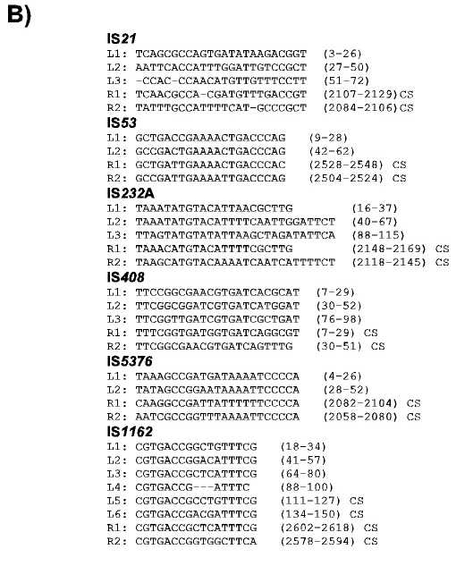

 |
The IS21 family
The nucleotide sequence of the multiple terminal repeats together with their coordinates are presented. CS, complementary strand. L1, L2, L3 and R, R2 indicate internal reteated sequences at the left and right ends respectively.
|